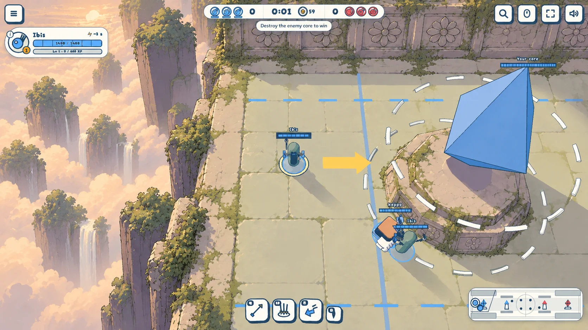
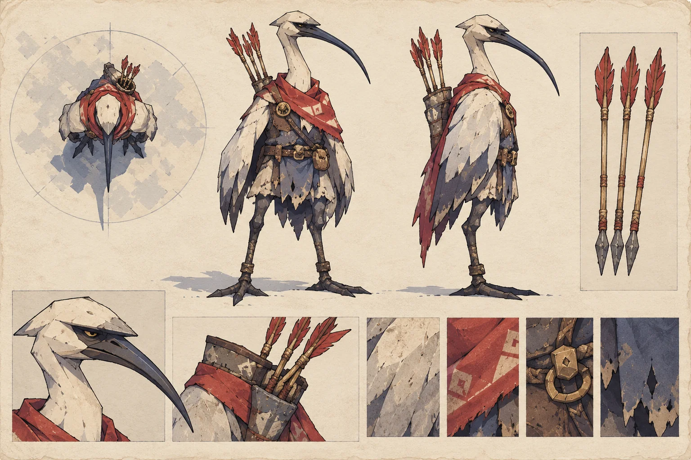
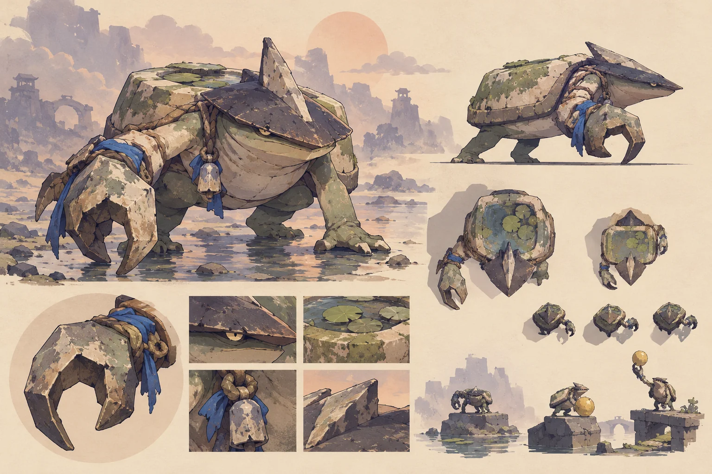
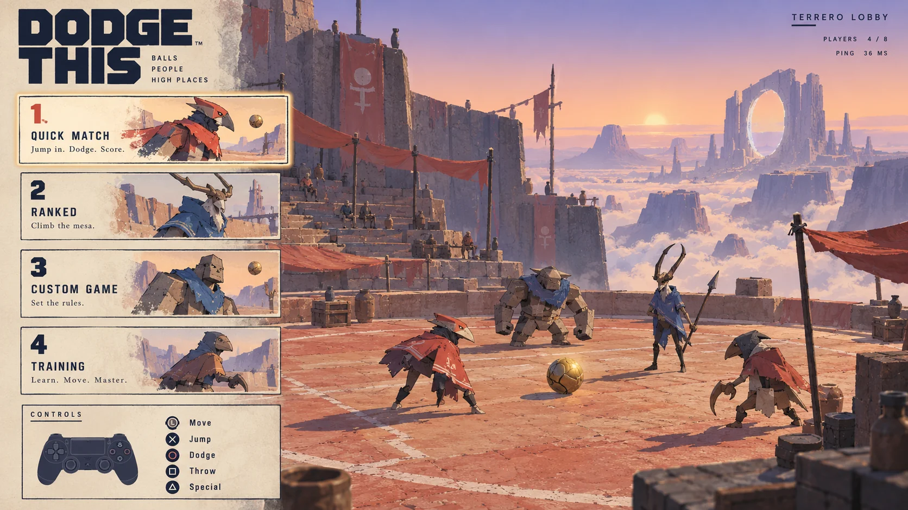

Concept art trial
Four directions to judge, not finished game assets. Tap an image to see it full size.




Four directions to judge, not finished game assets. Tap an image to see it full size.



